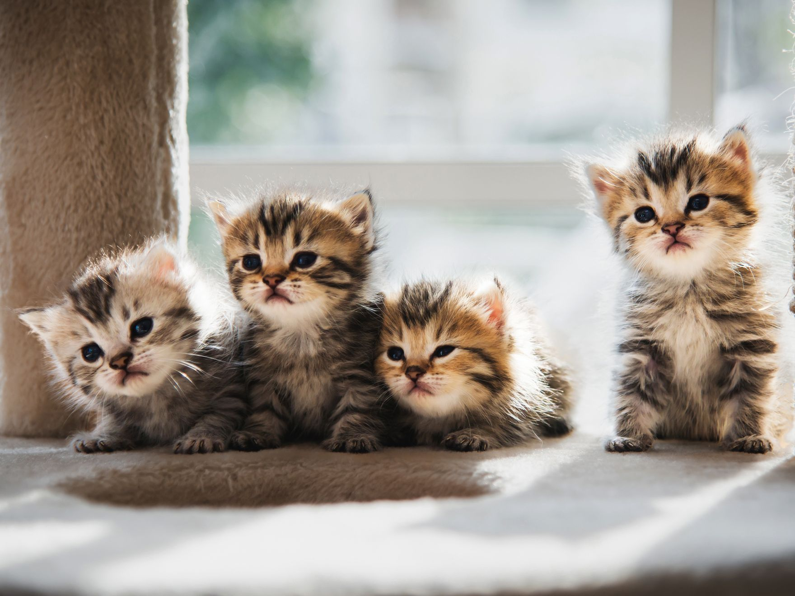
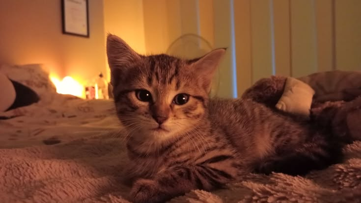
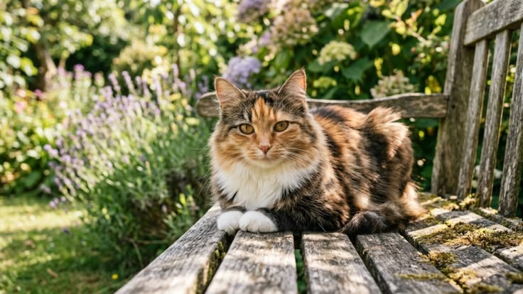

TAHAP PERTAMA
Anak Kucing
Bayi kucing memiliki ukuran seperti segenggam tanganmu. Temukan tips menarik dan bermanfaat untuk menjaga sahabat kecilmu selama tahun pertamanya.
Pelajari lebih lanjut ↗Merawat kucing adalah pengalaman yang menyenangkan. Mulai dari menjaga kebersihan, memberikan makanan bergizi, hingga memperhatikan kesehatannya, setiap hal kecil dapat membantu sahabat berbulu tumbuh lebih bahagia.
Jelajahi panduan ↓Memahami kebutuhan kucing dapat membantu pemilik memberikan perawatan yang tepat sejak awal.
Para pemilik kucing baru mungkin merasa kewalahan ketika mempelajari cara merawat kucing. Mulai dari memberikan makanan bergizi, menjaga kebersihan secara teratur, menjadwalkan kunjungan ke dokter hewan, hingga memberikan perhatian pada bulu dan kuku mereka.
Merawat kucing, termasuk anak kucing yang baru lahir, dapat menjadi pengalaman menyenangkan dan memuaskan. Dengan memahami kebutuhan mereka dan membangun rutinitas yang baik, kamu dapat mempererat ikatan dengan sahabat berbulu kesayanganmu.
Kenali kebutuhan kucing berdasarkan tahap kehidupannya.

Bayi kucing memiliki ukuran seperti segenggam tanganmu. Temukan tips menarik dan bermanfaat untuk menjaga sahabat kecilmu selama tahun pertamanya.
Pelajari lebih lanjut ↗
Apakah kucingmu suka merangkak naik ke pangkuanmu? Atau menjelajahi lingkungan di luar teritorinya untuk mencari pengalaman baru?
Pelajari lebih lanjut ↗
Ada saatnya ketika kucingmu lebih memilih tidur dengan nyaman dibandingkan bermain di luar. Berikan perhatian sesuai kebutuhannya.
Pelajari lebih lanjut ↗Temukan jawaban atas pertanyaan umum seputar perawatan kucing kesayangan.
Bagi pemilik kucing baru, tanggung jawab merawat kucing terkadang terasa menakutkan. Namun, ada banyak hal yang dapat dipelajari, mulai dari memahami kebutuhan dasar, memberikan makanan yang tepat, menjaga kebersihan bulu, hingga memperhatikan kesehatan mereka.
Berikan makanan yang tepat, luangkan waktu untuk bermain dan bercengkerama, serta perhatikan kebutuhan perawatannya. Rutinitas yang baik dan perhatian penuh kasih dapat membantu menciptakan kehidupan yang lebih menyenangkan.
Anak kucing yang baru lahir membutuhkan perhatian dan perawatan khusus. Hal yang perlu diperhatikan meliputi pemberian makanan yang tepat, perawatan bulu, dan pemeriksaan rutin dengan dokter hewan.
Rutinitas yang konsisten dapat membantu menciptakan suasana nyaman sebelum tidur. Biasakan waktu bermain, perawatan bulu, serta pastikan kebutuhan makanan dan lingkungan tidurnya terpenuhi.
Perawatan kucing mencakup pemberian makanan yang sesuai, menjaga kebersihan, merawat bulu dan kuku, menyediakan lingkungan yang nyaman, serta melakukan pemeriksaan kesehatan. Anak kucing juga membutuhkan perhatian khusus selama masa pertumbuhannya.